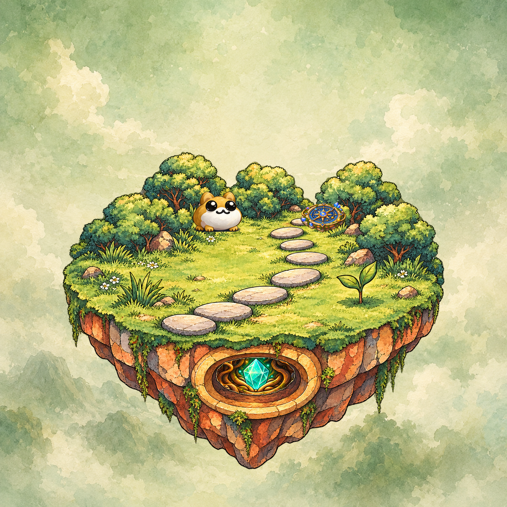
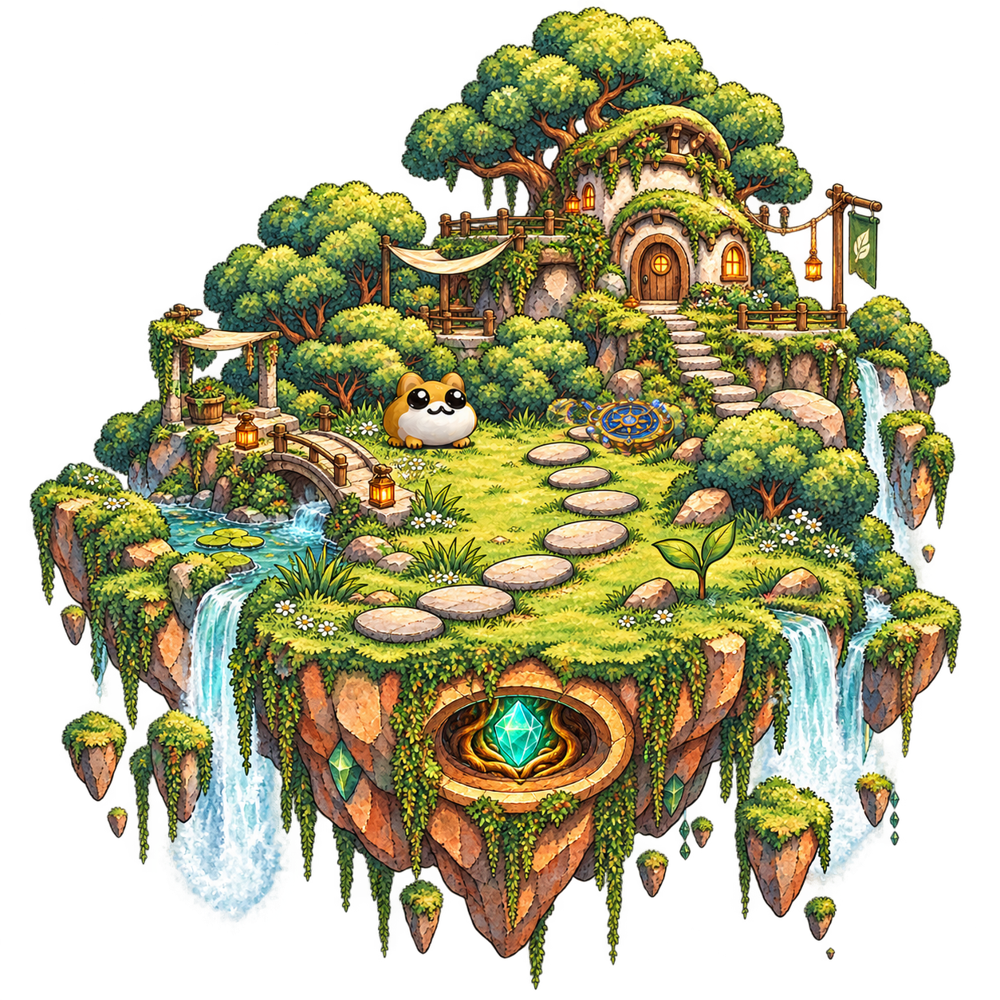
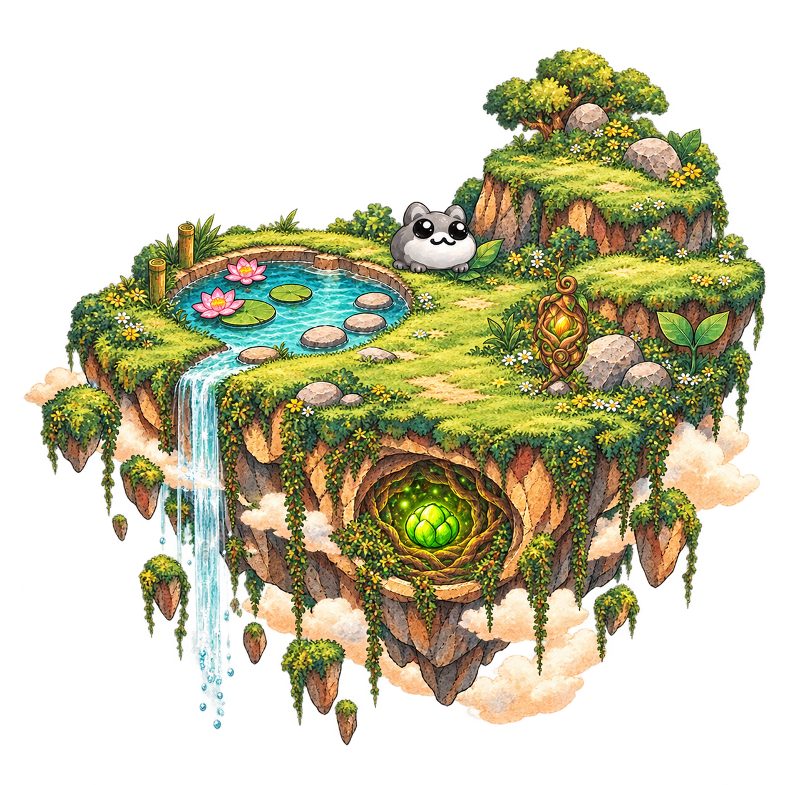
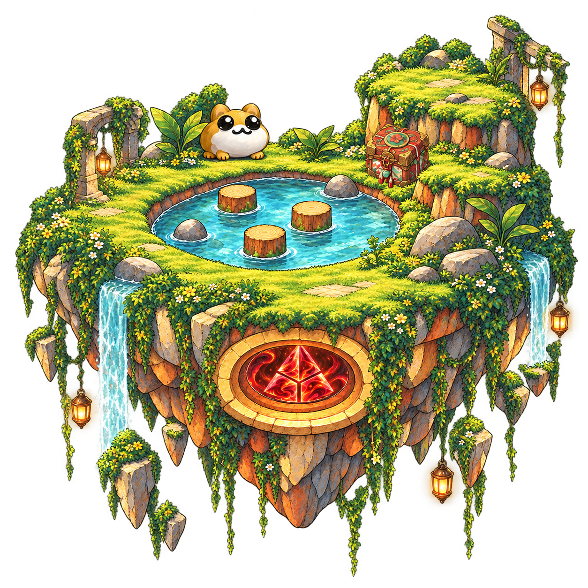
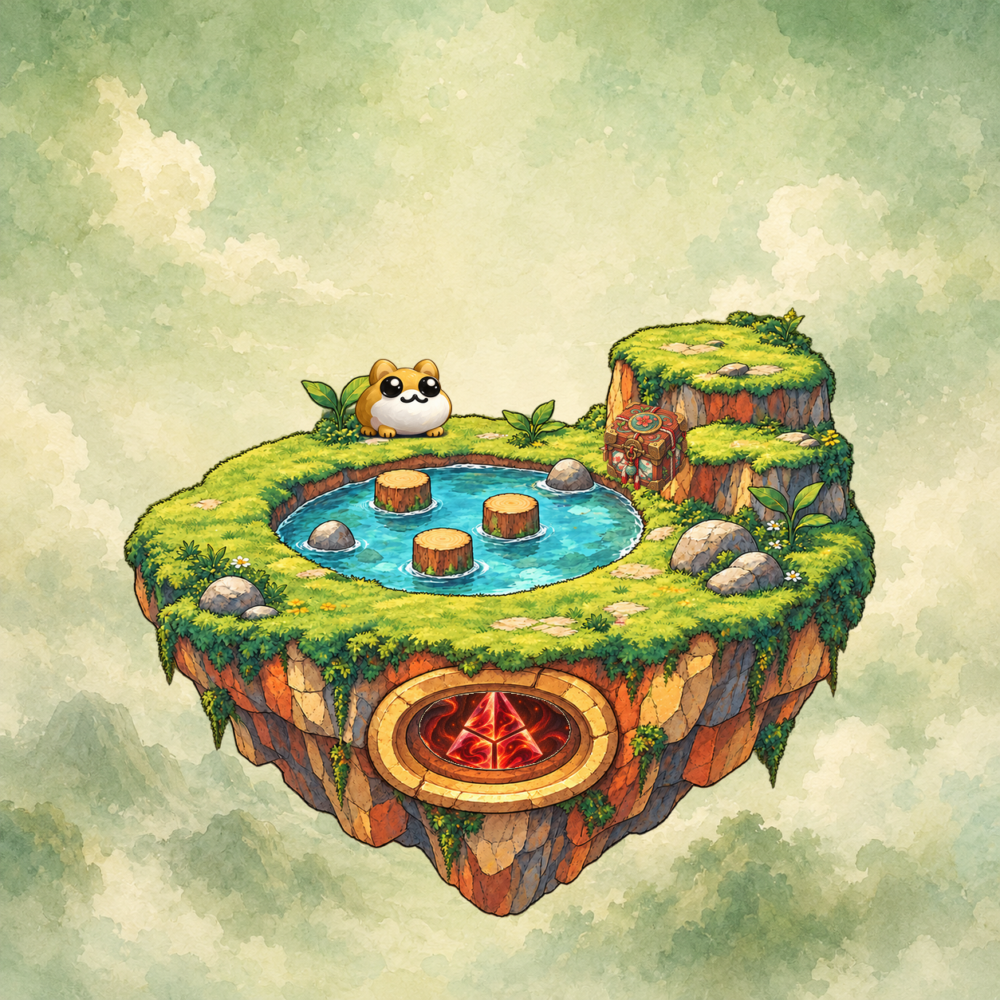

Lore Land#715Owner not evaluated



Imagined Lore Land presentation with no live world state.
Imagined lore-world specialist guide
Specialist Agent A Presentation only · not a live invocationProject
EXPLORE · LEARN · PROPOSE
Explore real Canonical Lore Land Deeds by public wallet address. Viewing an address never signs, logs in, or proves identity. An optional wallet connection observes only that address.
0x0495601af6f86efb14c9d478ea46b2aa09cb164a
Paste any Base wallet address to observe its Canonical Lore Land Deeds live. Viewing a pasted address never signs or stores it; the check reads public chain and IPFS data only.
Connect to observe this wallet's own deeds without pasting. Connecting never signs, transacts, or authenticates; presentation is not authority.
Resting fixture preview · running a lookup above swaps this for the live, block-stamped observation.


Truth boundary: every live result binds ownership to the Base contract at the observed block shown with it. OpenSea and Tobyworld links are presentation sources; nothing here proves identity, membership, or authority.
Point-in-time read-only observation. The owner shown carries the same epistemic status as the address observer above — it is presentation, never identity, membership, or authority.
Inspect the shape and safety posture of ToadAid's governed knowledge system. This desktop cut presents a bound snapshot of the Forge product contract; it does not invoke the Forge runtime.
41a15164f091f63e9a4d3b06c5ac4e43c9d4755b
The desktop presents the current operator surface without calling it in this cut.
Truth boundary: this view is a fixture-bound product projection tied to exact Forge and architecture commits. It is not a live registry, not current runtime truth, and not authority. P5C may build the library browser on this surface without changing those laws.